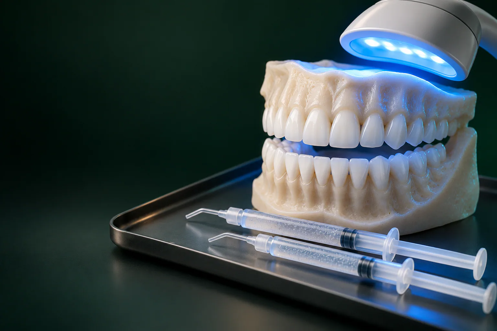

Читайкин Артём Сергеевич
Терапевт, эндодонтист
Лечение кариеса и каналов, сохранение зубов
Записаться к врачу
Если зубы потемнели от кофе, чая, курения или просто с возрастом, а после чистки собственный оттенок всё равно кажется вам недостаточно светлым, поможет профессиональное отбеливание зубов.
Имеются противопоказания. Необходима консультация специалиста.
В стоматологии «Умная Медицина» в пос. Удельная (Раменский округ) проводят клиническое отбеливание по системе FLASH: от 15 000 ₽. Процедуру выполняет врач в кабинете: он защищает дёсны, наносит гель и следит за реакцией зубов. Начните с консультации стоматолога-терапевта: врач проверит, нет ли противопоказаний, и подскажет, какого результата реально ждать в вашем случае.
Итоговая сумма зависит от того, нужна ли перед процедурой профгигиена или лечение кариеса, и от того, придётся ли потом менять пломбы на передних зубах под новый цвет. Ниже: цена процедуры и услуг, которые чаще всего идут вместе с ней.
Цены «от»: минимальные, точную сумму врач называет после осмотра. Цены актуальны на 18.10.2026. Все услуги клиники: на странице цены. Цены на профессиональную гигиену перед отбеливанием: на отдельной странице. Что входит в стоимость отбеливания в вашем случае, врач запишет в план лечения до начала работы.
Подробнее: на странице рассрочка и налоговый вычет.
Цвет зуба определяют не только эмаль, но и дентин под ней. Пигменты из еды, напитков и табака со временем проникают в микропоры эмали, и зуб выглядит тусклее. Отбеливающий гель содержит перекись водорода или перекись карбамида. При распаде перекиси образуется активный (атомарный) кислород: именно эта форма кислорода высвобождается при отбеливании зубов. Он проникает в эмаль и расщепляет крупные молекулы пигментов на мелкие и светлые. Поэтому отбеливание эмали меняет оттенок изнутри, а не просто снимает налёт с поверхности, как чистка.
В кабинете врач работает с гелем более высокой концентрации, чем в домашних средствах, поэтому заметный результат обычно виден уже после одного визита. Перед нанесением геля дёсны и губы изолируют, чтобы состав попадал только на эмаль. Насколько светлее станут зубы, зависит от их исходного цвета и причины потемнения: врач оценит это на осмотре по шкале оттенков.
Пациенты часто приходят с разными названиями методик. Коротко о том, чем они отличаются:
В клинике проводят кабинетное отбеливание FLASH. Подойдёт ли оно вам, врач решает по состоянию эмали, чувствительности и пожеланиям к результату.
Отбеливание рассчитано на взрослых со здоровыми зубами и дёснами, которых не устраивает собственный оттенок эмали: потемнение от кофе, чая, вина, курения, возрастное пожелтение.
Обычно процедуру откладывают или не проводят, если есть:
Есть и ограничения по результату. Пломбы, коронки и виниры не меняют цвет под действием геля. «Тетрациклиновые» и другие внутренние окрашивания, а также зубы после лечения каналов поддаются хуже. Полный список противопоказаний для вас врач уточнит на консультации.
Перед отбеливанием врач осматривает зубы и дёсны. Если находит кариес, его сначала лечат: гель не должен попадать в открытую полость. Затем, как правило, делают профессиональную гигиену: ультразвук снимает камень, Air Flow и полировка убирают налёт. На чистой эмали гель действует равномерно, а вы сразу видите свой естественный цвет: иногда его уже достаточно.
Отбеливание проходит за один визит; сколько времени оно займёт, врач скажет на консультации.
После процедуры зубы могут острее реагировать на холодное и горячее: это частая временная реакция эмали, которая обычно проходит за несколько дней. Чтобы снизить дискомфорт, врач может порекомендовать пасту для чувствительных зубов или реминерализующий гель. Если чувствительность сильная или не проходит, приходите на осмотр.
Сразу после процедуры эмаль особенно легко впитывает пигменты, поэтому на время врач советует «белую диету». Сколько дней её соблюдать, он скажет после процедуры.
Можно: рис, макароны, белый хлеб, курица и белая рыба, творог, йогурт без красителей, молоко, светлые сыры, бананы, вода без газа.
Нельзя: кофе, чёрный и зелёный чай, красное вино, газировка с красителями, ягоды, свёкла, гранат, соевый соус, кетчуп, шоколад, курение.
Если всё же выпили кофе или чай: прополощите рот водой. Окрашивающие напитки удобнее пить через трубочку, а от курения в первые дни стоит отказаться.
Пломбы, коронки и виниры не светлеют. Если они стоят на передних зубах, после процедуры они могут выглядеть темнее соседних. Поэтому врач обсуждает это заранее: обычно сначала проводят отбеливание, а через некоторое время меняют пломбы на новые под обновлённый оттенок, для этого подходит композитная реставрация (от 8 550 ₽). Коронки на передних зубах при необходимости переделывают, например циркониевые или керамические E.max (от 34 100 ₽). Сколько ждать перед заменой пломб, назовёт врач.
Эффект не постоянный: оттенок постепенно тускнеет под действием тех же пигментов, что и раньше. Как долго сохранится белизна, зависит от привычек: кофе, чая, курения, и от домашнего ухода. Продлить результат помогают регулярная профгигиена, чистка зубов дважды в день и осмотры у стоматолога. Повторную процедуру врач может предложить, когда оттенок заметно изменится, интервал он определит индивидуально.
Процедуру проводит стоматолог-терапевт: он оценивает эмаль и дёсны, при необходимости лечит кариес и подбирает схему отбеливания. К кому записаться на отбеливание в удобный день, подскажет администратор. Стоматологи-терапевты клиники:
Все врачи клиники, на странице врачи.
Терапевт, эндодонтист
Лечение кариеса и каналов, сохранение зубов
Записаться к врачу
Терапевт, ортодонт
Эстетическая реставрация и прикус
Записаться к врачуНа отбеливание к нам приходят жители Удельной и соседних посёлков, приезжают из Раменского, Люберец и Балашихи. Отзывы о клинике и врачах: на ПроДокторов, Яндекс Картах и 2ГИС.
Сначала врач осматривает зубы, лечит кариес и при необходимости проводит профгигиену. Затем изолирует дёсны и наносит на эмаль отбеливающий гель на время, предусмотренное протоколом системы. В конце гель смывают, а врач сравнивает новый оттенок со шкалой.
Клиническое отбеливание по показаниям и под контролем врача считается безопасной процедурой для здоровой эмали. Основной побочный эффект: временная чувствительность. Риски выше при самостоятельном осветлении содой, абразивными пастами и аптечной перекисью.
Возможна временная чувствительность, результат не вечный, а пломбы и коронки не светлеют: их иногда приходится менять под новый цвет. Кроме того, несколько дней нужно соблюдать «белую диету».
Можно, но сами пломбы останутся прежнего цвета. Если они стоят на передних зубах, врач заранее предупредит, что после процедуры их, возможно, стоит заменить.
Это решает врач после осмотра. Кабинетное отбеливание даёт результат за визит, домашнее в капах идёт курсом в несколько недель. В клинике проводят клиническое отбеливание FLASH; подходит ли оно вам, врач скажет на консультации.
Всё, что окрашивает: кофе, чай, красное вино, ягоды, свёклу, соусы с красителями, шоколад. От курения на это время стоит отказаться. Подробный список: в разделе о «белой диете» выше.
Во время процедуры обычно ощущается только дискомфорт от расширителя и временная чувствительность к холоду. Если неприятно, скажите врачу: он сделает паузу.
Результат зависит от исходного цвета эмали и причины потемнения, поэтому у разных людей он отличается. Реалистичный ожидаемый оттенок врач покажет по шкале на консультации.
Нет, отбеливание проводят после снятия брекетов: под замками эмаль осталась бы темнее. Во время ортодонтического лечения достаточно регулярной профгигиены.
Запишитесь на консультацию: план лечения с ценой по этапам
Имеются противопоказания. Необходима консультация специалиста.
Адрес клиники: Московская обл., Раменский округ, пос. Удельная, ул. Громова, 10/2. Клиника рядом с Жуковским; по соседству Малаховка, Быково, Ильинский, Родники, Островцы, Красково и Октябрьский. Пациенты приезжают и из Люберец, Раменского и Балашихи. Перед отбеливанием можно записаться на консультацию стоматолога.
На машине: из Жуковского через Быково, без выезда в Москву. У клиники есть бесплатная парковка.
На МЦД-3: до станции Удельная, от неё пешком до клиники. Из Жуковского: от станции Отдых три остановки без пересадок (Ильинская, Быково, Удельная).
Подробнее о клинике: на странице стоматология в Удельной.
Имеются противопоказания. Необходима консультация специалиста.
пгт Удельная, Раменский округ, рядом с Жуковским.
Ежедневно с 9:00 до 21:00
+7 495 150-36-15К нам ездят из Жуковского, Раменского, Быкова, Ильинского, Красково, Малаховки, Островцов, Люберец и Балашихи.
Перезвоним за 5 минут, подберём врача и удобное время.
Оставьте номер, администратор перезвонит и ответит на вопросы.
Подойдёт КТ, панорама, прицельный снимок или фото плана лечения из другой клиники. Врач посмотрит и ответит в течение рабочего дня. Это бесплатно.
Хирург, ортопед и терапевт осмотрят вас вместе, сделаем КТ. Консультация бесплатная, если остаётесь на лечение. Стоимость лечения врач назовёт после осмотра.
Консультацию ведут вместе
 ХирургМихаил
ХирургМихаил ОртопедЕвгенийТерапевтАртём
ОртопедЕвгенийТерапевтАртёмПервый визит 0 ₽, если остаётесь на лечение
Хирург, ортопед и терапевт посмотрят ваш случай вместе и предложат два-три варианта с ценой. Оставьте номер, администратор перезвонит и подберёт время.
Скидка 10% на лечение, если оплатить его в день консультации
Перезвоним за 5 минут, ежедневно с 9:00 до 21:00.